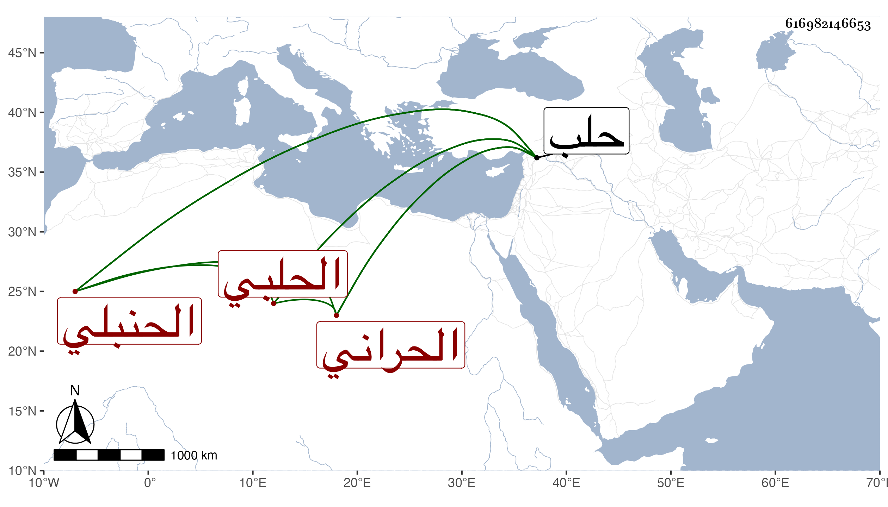

0902Sakhawi.DawLamic.ITO20230111-ara1.EIS1600.616982146653
Biography ID: 616982146653
75
عبد الأحد بن محمد بن عبد الأحد بن عبد الرحمن بن عبد الخالق الزين أبو المحاسن الحراني الأصل الحلبي الحنبلي والد محمد الآتي . ولد سنة بضع عشرة وسبعمائة وقال ابن خطيب الناصرية أنه فيما يحسب أخبره أنه سنة ست عشرة أو التي قبلها وأنه قرأ القراآت على جدي الأعلى لأمي وعم جدتي لأبي الفخر عثمان ابن خطيب جبرين وعلى غيره وكان يعرف طرفا منها ومن فقه الحنابلة وناب في الحكم بحلب وكان شيخا دينا ظريفا حسن المحاضرة قرأ عليه البرهان الحلبي ختمتين لأبي عمرو ، واجتمع به ابن خطيب الناصرية غير مرة . مات في كائنة حلب بعد أن عاقبه التتار في ربيع الأول سنة ثلاث وقد عمر وذكره شيخنا في إنبائه في عبد الأحد وكذا في عبد الله وثانيهما غلط وقال غيرهما أنه من مشايخ حلب المشهورين صنف كافية القارىء في فنون المقارىء في القراءات وأنه كان حفظ المختار فرأى النبي صلى الله عليه وسلم فقال له يا رسول الله على أي مذهب أشتغل فقال على مذهب أحمد وأشار لذلك ولده الآتي في أرجوزته التي نظم فيها العمدة لابن قدامة فقال :
| لما رآه والدي إذ نشا | في البعض من كراته التي رأى |
| فيها رسول الله وهو يسأل | منه بأي مذهب يشتغل |
| قال اشتغل بمذهب ابن حنبل | أحمد فاخترناه عن أمر جلى |
| ولا أرى تأويل هذي القصه | إلا لحكمة بنا مختصه |
| فيه أرادها لنا النبي | منه وإلا كلهم مهدى |
| جزاهم الله جزيل الرحمه | عنا وكل علماء الأمه |
